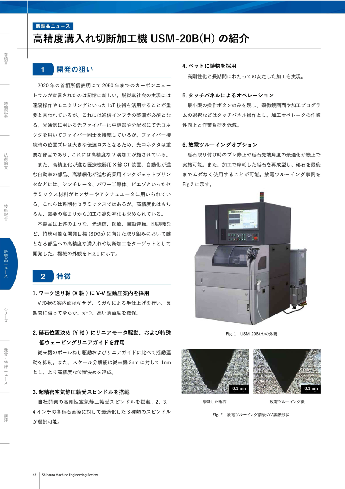
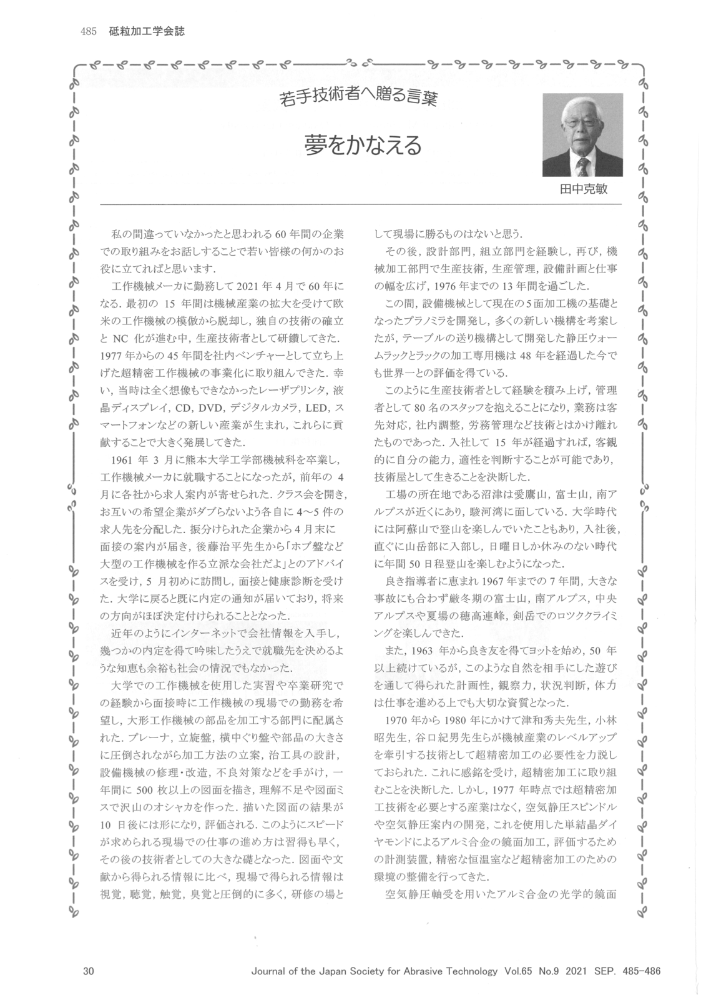

這組文件的共同問題
四份附件其實指向同一個問題：超精密加工公司要如何把微米以下的加工能力，變成穩定產品、可培養的人才，以及可擴張的市場。USM-20B(H) 是產品端，田中克敏的〈夢をかなえる〉是技術者養成端，Moore Nanotechnology 的併購簡報是資本與市場端。

產品線索：USM-20B(H) 把微細 V 溝加工做成設備能力
USM-20B(H) 的開發背景來自幾個需求源：光纖連接器、醫療用 X 光 CT、自動化汽車零件、商業噴墨印刷機，以及 scintillator、power 半導體、piezo 等難削材陶瓷。這些零件的共同點是尺寸小、位置誤差容忍低，且需求量上升後，單靠熟練工手感無法支撐產能。

- X 軸工件送給採用 V-V 型動壓案內，重點是讓長期直線運動保持滑順與真直度。
- Y 軸砥石位置決定改用リニアモータ與低ウェービングリニアガイド；文件可見解析度由傳統 2 nm 提升到 1 nm。
- 主軸搭載自社開發的高剛性空氣靜壓軸受スピンドル，並對 2、3、4 inch 砥石直徑準備 3 種主軸選項。
- 床身採用鑄物，目的在提高剛性並讓長時間加工穩定。
- 操作面改為タッチパネル，保留必要按鈕，降低加工者在顯微鏡畫面與程式選擇之間的負擔。
- 放電ツルーイング可在機上修正砥石形狀，文件中的 0.1 mm 比例影像顯示，修整後 V 溝輪廓更尖銳、磨耗痕跡更受控。
技術者線索：田中克敏把能力來源放在現場
田中克敏在〈若手技術者へ贈る言葉：夢をかなえる〉中回顧約 60 年的工作經驗。他先從工作機械メーカー的現場起步，經過機械加工、設計、組立、生產技術、生產管理與設備計畫，再投入超精密工作機械事業。這段經驗談的重點，是一個技術者如何建立判斷力。

現場で得られる情報は視覚、聴覚、触覚、臭覚と圧倒的に多く、研修の場として現場に勝るものはない。 — 田中克敏〈夢をかなえる〉
這句話可以直接接到 USM-20B(H)。超精密設備需要透過機台振動、刀痕、砥石磨耗、案內面滑順度與操作負荷來回校正。田中提到一年畫 500 張以上圖面、處理設備修理改造與不良對策，這些經驗共同形成後來能判斷超精密加工環境的能力。
資本線索：Moore Nanotechnology 補上市場與開發資源
M&A 簡報把 Moore Nanotechnology Systems 的併購放在財務與整合效果中看。頁面中的 Nanotech 單體売上高予測從 CY2025 約 50 多億円，走向 CY2026 約 90 億円，CY2027 與 CY2028 則以箭頭表示仍有上修空間。這是公司對成長路徑的方向性揭示。

- 雙方銷售網與銷售資源互用，讓商品進入更多客戶場景。
- 共同開拓自動車光學與醫療眼科等新成長市場。
- 開發資源共享，降低重複投入。
- 雙方共通基幹零件可集中生產，藉此降低原價。
這條資本線索與 USM-20B(H) 可以放在同一張地圖上。前者是微細溝槽與切斷加工的製程設備，後者補上超精密光學加工、市場入口與品牌能見度。若要判斷併購是否真的有效，後續應觀察三個指標：Nanotech 銷售是否按預測上升、共通零件集中生產是否反映在毛利，以及雙方是否能在眼科、光學與車用場景拿到新增訂單。
對 HIT 或精密加工研發的啟示
這批材料對精密加工研發的價值，來自一個可複用的判斷框架。需求端先定義尺寸、材料、穩定性與產能；設備端把定位、主軸、床身、修整與操作介面拆開驗證；組織端培養能讀懂現場訊號的人；資本端補足市場通路與關鍵能力缺口。
| 面向 | 文件線索 | 可驗證問題 |
|---|---|---|
| 產品 | USM-20B(H) 的 V-V 案內、1 nm 解析度、空氣靜壓主軸、放電ツルーイング | 加工後 V 溝輪廓、長時間穩定性與砥石耗損是否可量化 |
| 人才 | 田中克敏強調現場資訊密度、圖面訓練與跨部門經驗 | 工程師是否能從設備聲音、振動、刀痕與不良模式回推原因 |
| 市場 | Moore 併購鎖定光學、醫療眼科、自動車光學與共通零件量產 | 新市場收入、毛利與共用零件效益是否在財報中出現 |